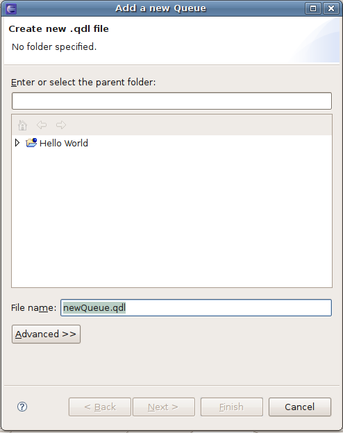
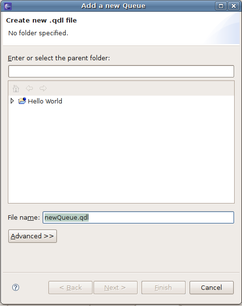
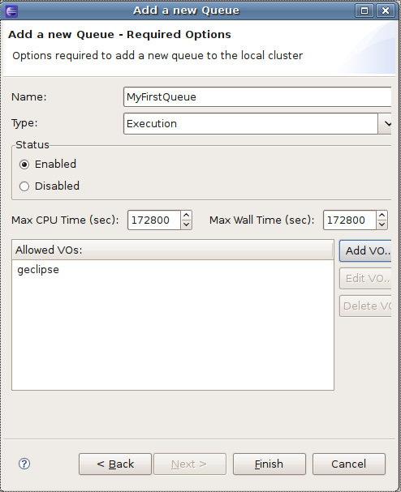

g-Eclipse - Creating a Queue Description (QDL) configuration document
In order to create a Queue Description Language(QDL) Document,
you first need to specify mandatory information using the New Queue
Configuration Wizard. To activate this wizard you go to
 File > New > Queue Configuration. A wizard dialog opens up where you need to specify the file name of new
Queue Configuration document and in which Grid project it should belong to. Note: Queue Configuration Documents must
be appended with the *.qdl extension.

File > New > Queue Configuration. A wizard dialog opens up where you need to specify the file name of new
Queue Configuration document and in which Grid project it should belong to. Note: Queue Configuration Documents must
be appended with the *.qdl extension.

Clicking Next will take you to a page where you specify mandatory Queue Configuration setting such as the
Queue Name, Queue Type, Queue Status and Allowed VO's. Note: The Queue name must be unique.

Clicking Finish will create the Queue Configuration description file in the Grid Projects View and open it in the
Queue Configuration Editor.